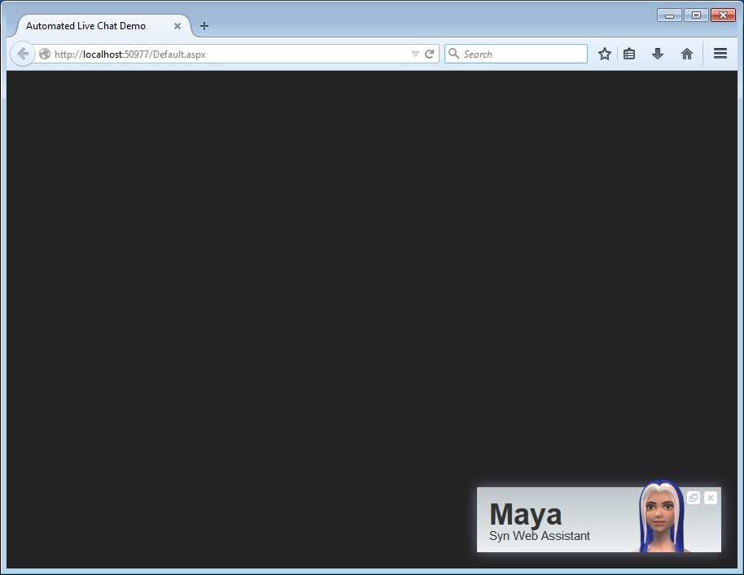
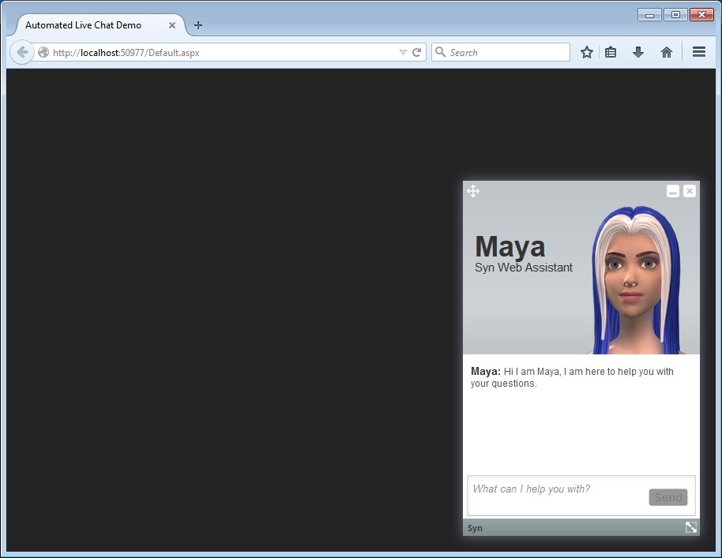
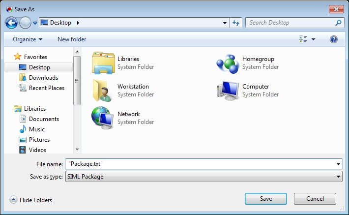

Web Assistant
Using the WebAssistant class in Syn.Bot.Assistant library developers can easily add a Virtual Chat agent to their ASP.NET websites. This is achieved by using the class library Syn.Bot.Assistant in your project and requires that you are working on a ASP.NET website that targets .NET Framework 4.5 or above.


The best part of using the library is that it automatically provides a service URL that can be used to fetch the CSS, JavaScript and HTML elements for displaying and interacting with your Virtual Chat Agent dynamically.
How it works
(Simple Hack) A web form is added to your ASP website project and all the HTML elements are removed from the .aspx page except for the first line that defines CodeFile to be used. The name of this aspx page is set to ChatService.aspx and will be used as a service URL to interact with the underlying Chatbot which is powered by SIML. The same page will also serve as the URL to fetch the CSS, JavaScript and HTML elements to be included in your web page once its loaded. Inside the CodeFile we define a static constructor that will initialize the default values for the Chat agent to use. Finally in the page load constructor we write 1 line of code that passes the Request and Response objects to the ChatAgent which in turn evaluates the URL variables and returns the appropriate response with the proper header.
Requirements
- ASP.NET Website targeting .NET Framework 4.5 or above
- Your website should not be running on a shared-hosting basis.
- 32MB or more RAM available on server side
Getting Started
Before you begin download the Automated-Live-Chat-Demo project files from GitHub. Throughout this tutorial we will assume that you are working on an ASP.NET project using Visual Studio 2013 or above
Importing the NuGet Package
Click on Tools-> NuGet Package Manager -> Package Manager Console and type Install-Package Syn.Bot.Assistant
Once done the required class library along with Syn.Bot portable class library will be added as a reference to your project.
Creating the Service URL (ChatService.aspx)
Now right click on your project Add->New Item… and select Web Form. Name your web form “ChatService.aspx“. This page will now serve as the service URL. Ofcourse you can create an asmx service as well but for demonstration we will stick with this simple hack.
Double click on the ChatService.aspx item in the solution explorer and remove every line except the first line which should look something like the following
<%@ Page Language="C#" AutoEventWireup="true" CodeFile="ChatService.aspx.cs" Inherits="Automated_Live_Chat_Demo.ChatService" %>
Now right click on ChatService.aspx and paste the following code:
using System;
using System.Web;
using Syn.Bot.Assistant.Web;
namespace YOUR_PROJECT_NAMESPACE
{
public partial class ChatService : System.Web.UI.Page
{
private static readonly WebAssistant WebAssistant;
static ChatService()
{
var websiteUrl = HttpContext.Current.Request.Url.GetLeftPart(UriPartial.Authority);
WebAssistant = new WebAssistant
{
ServiceUrl = websiteUrl + "/ChatService.aspx",
ResourceUrl = websiteUrl + "/Assistant",
Name = "Maya",
Title = "Syn Web Assistant",
Intro = "Hi I am Maya, I am here to help you with your questions.",
InputText = "What can I help you with?",
Footer = "Syn",
FooterLink = "http://www.syn.co.in",
RestartId = "restart",
PackageFileName = "Package.txt"
};
}
protected void Page_Load(object sender, EventArgs e)
{
WebAssistant.Process(Request, Response);
}
}
}
In the above code replace YOUR_PROJECT_NAMESPACE and YOUR_WEBSITE_URL with their respective values. You can also change the properties like Name, Footer, Title etc to suit your needs as the aforementioned values are just for clarification.
Placing the required files
Now that you have created your service URL its time that you placed the required images and the package in the right directory. To do so right click on your project Add->New Folder and name the folder Assistant.
Now that you have you created the Assistant folder add the image files found in the Demo Project by right clicking on the Assistant folder you created and selecting Add->Existing Item…
Once added we will move to adding a knowledge base to our Chat Agent using Chatbot Studio. If you haven’t installed Syn Chatbot Studio you can download it from here. Moreover a quick start tutorial on writing an SIML knowledge base using Chatbot Studio can be found here
(Assuming that you have written your first SIML Bot using Chatbot Studio)

he next step is to export your SIML Project to an SIML Package. To do so click Project->Export to Package in Chatbot Studio and type the file name as Package.txt ( With the double quotes to ensure that the file extension will be .Txt and not .SimlPk). The reason why the file should have the .txt extension and not the default .simlpk extension is because the ChatService.aspx page will load the file from URL and not the project directory.
Finalizing
Now that we have added the ChatService.aspx along with its code and have added all the files required in the right directory the last step is to add a simple JavaScript to the master page of your ASP Website Project so that the assistant is visible on every page of your website. To do so paste the following code just before the tag in your master page.
<script type="text/javascript">
(function () {
var scriptElement = document.createElement('script');
scriptElement.type = 'text/javascript';
scriptElement.async = true;
scriptElement.src = 'http://YOUR_WEBSITE_URL/ChatService.aspx?Get=Script';
(document.getElementsByTagName('head')[0] || document.getElementsByTagName('body')[0]).appendChild(scriptElement);
})();
</script>
In the above code replace YOUR_WEBSITE_URL with its respective value say www.example.com
Tips and Tricks
- You can replace the Avatar with your own custom avatar but make sure that you use the
.png fileformat if your wish to have a transparent background and also use the exact resolution as used by the avatar images in the demo project. - You can map
.simlpkextension in IIS to text/plain if you do not wish to rename the file extension to.txtevery time you upload a new SIML Package to the Assistant folder. - If you add an updated SIML Package to the Assistant folder, use the URL
http://YOUR_WEBSITE_URL/ChatService.aspx?Get=restartto restart the Chat Agent with its new knowledge base.